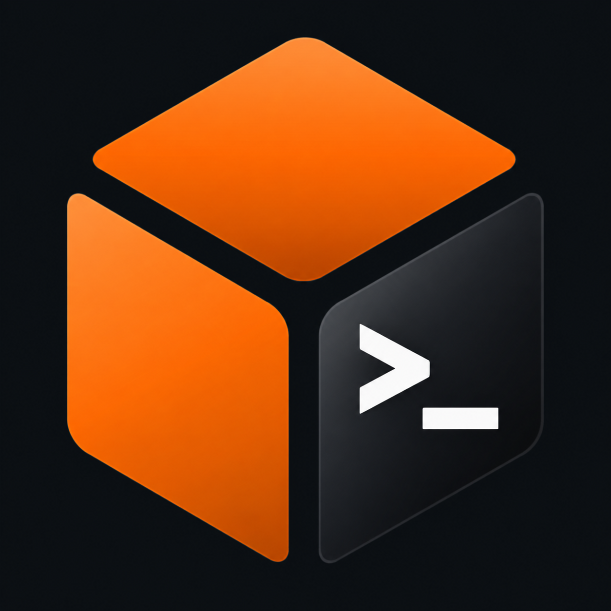
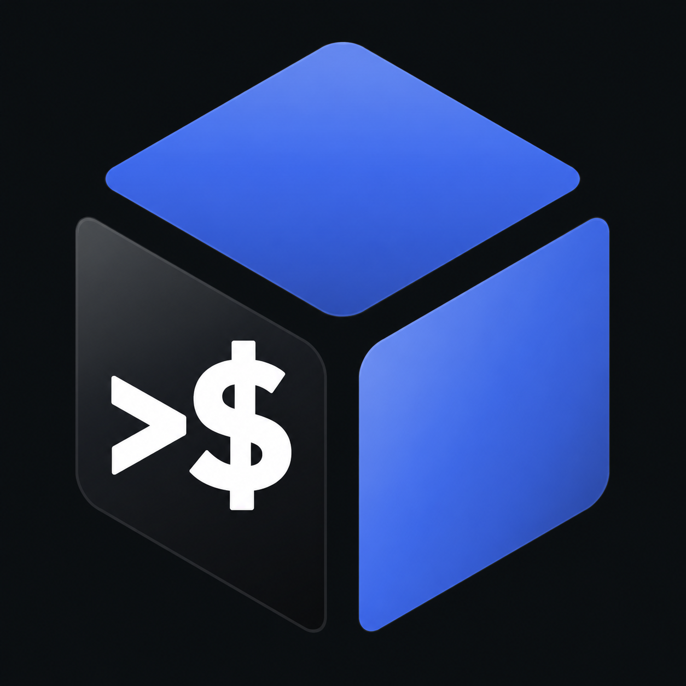
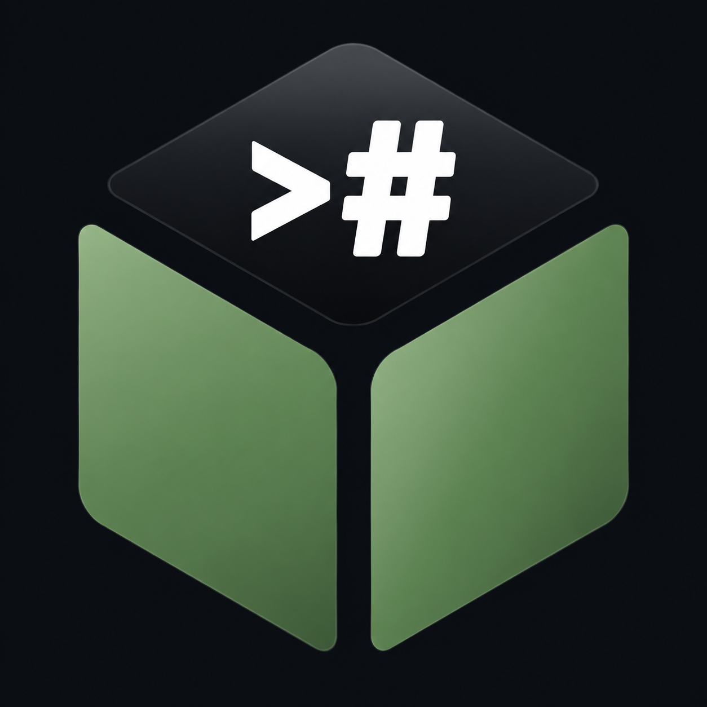
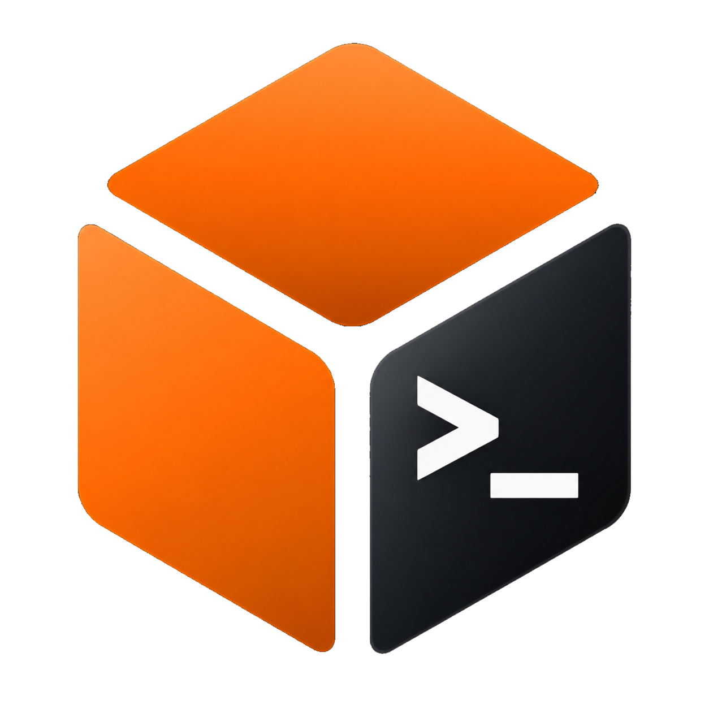
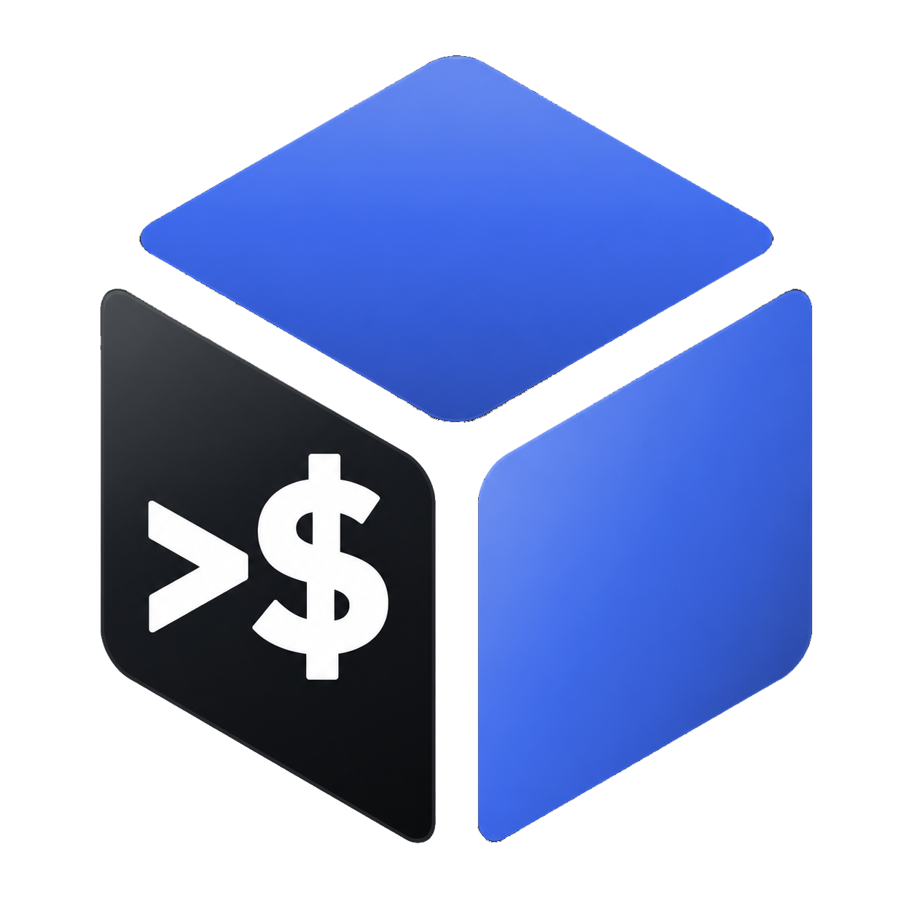
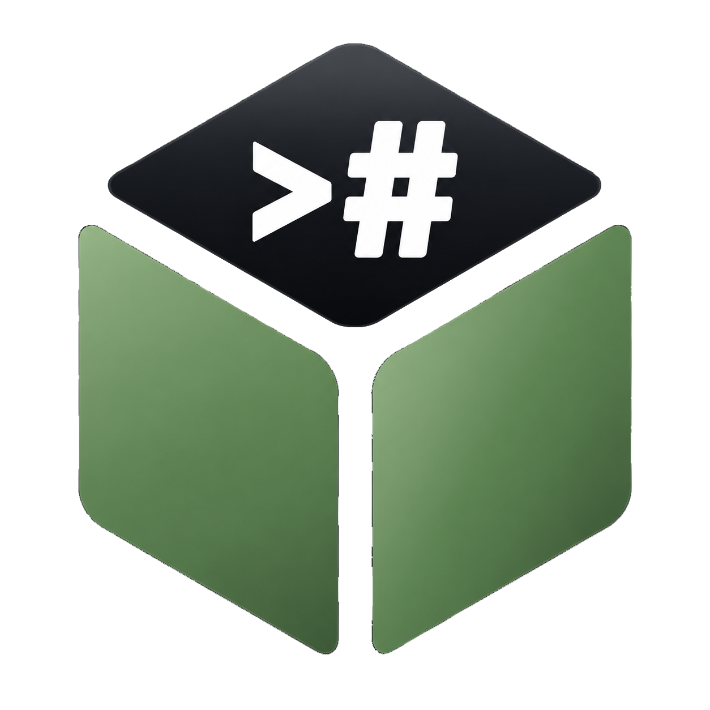
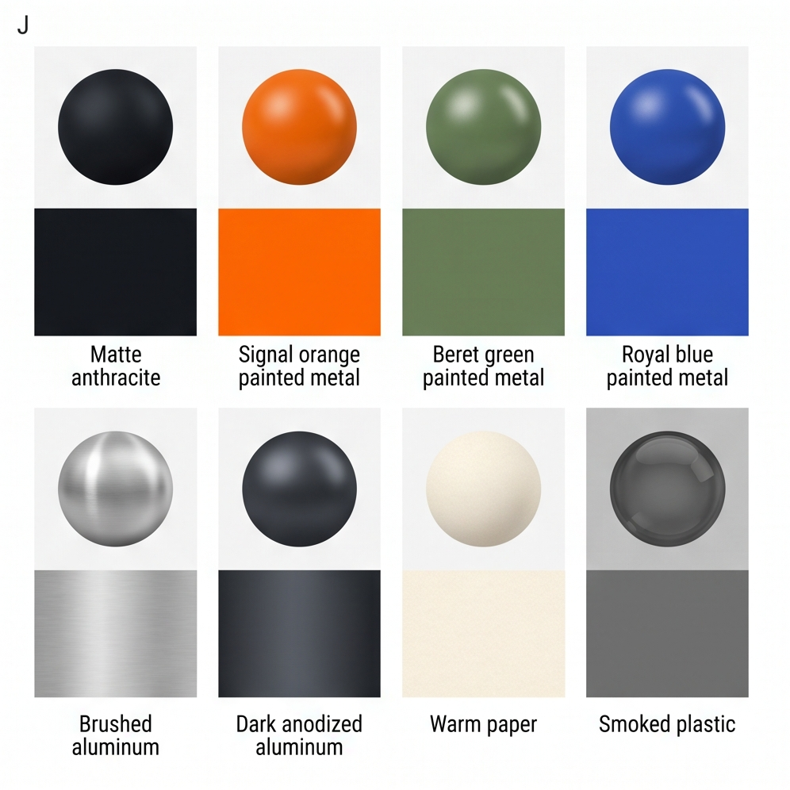
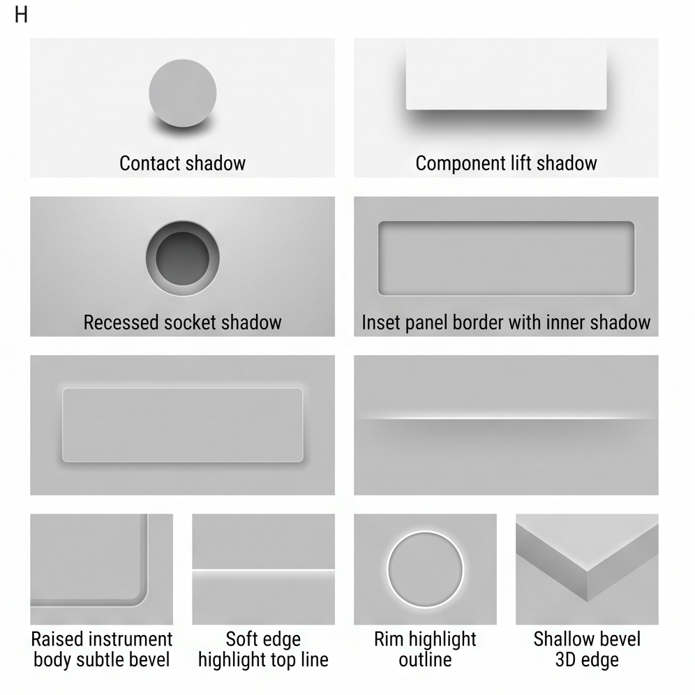
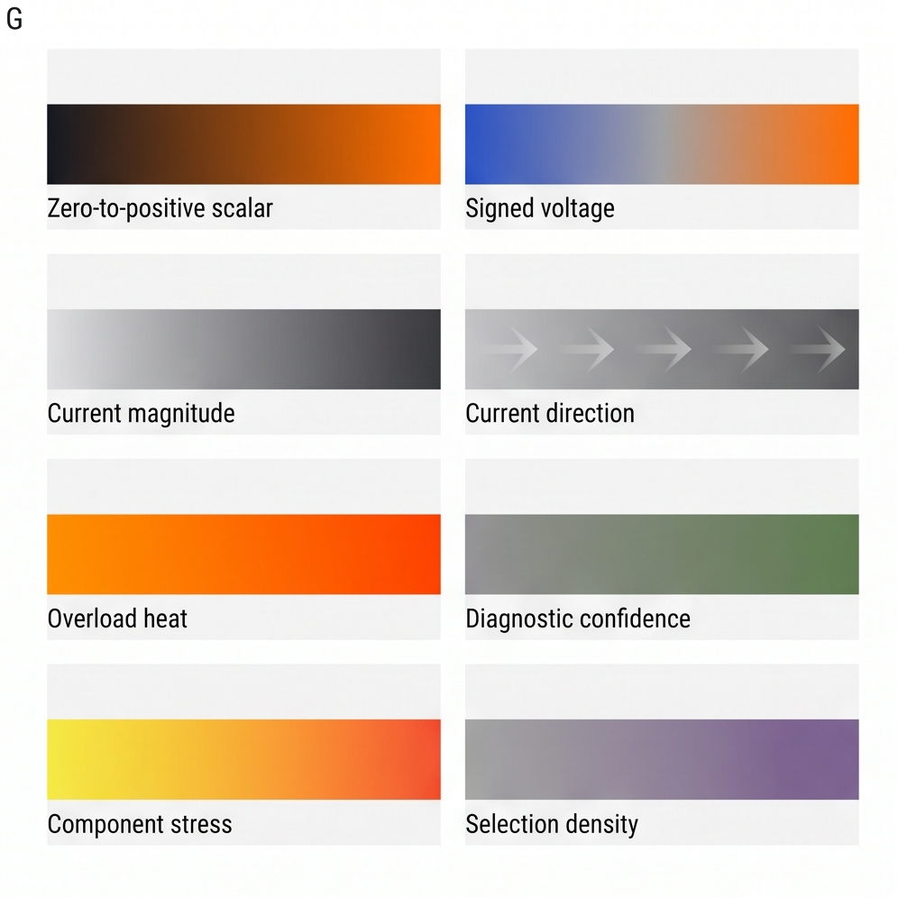
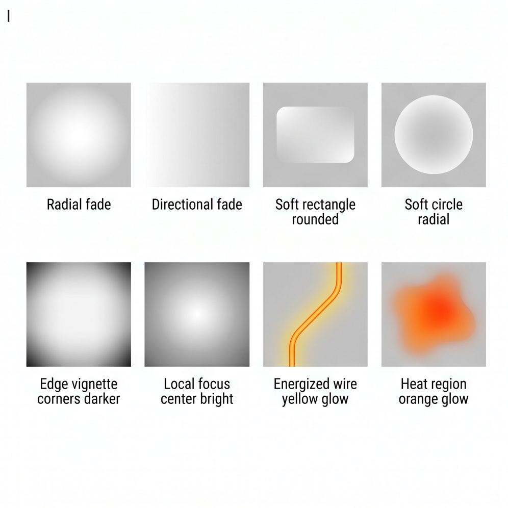

IDENTITYgnosix_DS mark
Compact header/app mark used beside gnosix_DS. Keep the ratified artwork intact; do not redraw its plate geometry.
- Use the whitespace-cropped SVG in UI.
- Keep dark backgrounds around it breathing.
Portable rules, inspectable scenes and explicit platform mappings carry gnosix from browser to Compose to GPUI without turning any toolkit into the design system. V3.4.2 ratifies the icon pack and repairs the asset containers and the validation that missed them, without changing the ratified identity masters.
Browse the laid-out components


Ratified master / face / symbol
Interface color and typography authority live in TOKENS.json. Ratified identity appearance lives separately in IDENTITY.md: Space Grotesk governs live interface text, while the accepted cube glyphs remain part of their image masters.
#111418#F7F3ED#FF6A00#5F7F52#4169E1Readable language, direct hierarchy, no ornamental second family.
04.6.0 / 1440 / project://gnosix / >_Fallbacks are target contingencies, not alternate brand typography. The packaged WOFF2 is used on Web; the package also includes a native TTF for Compose and GPUI mapping.
V3.4.2 treats the reference as more than a sequence of scenes. Identity objects, controls, state form and structural UI pieces are now shown as discrete components with enough spacing and hierarchy to evaluate implementation quality.
Compact header/app mark used beside gnosix_DS. Keep the ratified artwork intact; do not redraw its plate geometry.
Signal Orange family. The dark face remains on the right with the accepted >_ artwork.
Royal Blue family. The accepted >$ artwork is preserved exactly as ratified.
Beret Green family. The accepted ># artwork remains a fixed image master.
Role, rule, target projection and evidence gate stay separable. This card is a layout component, not a new semantic source of truth.
Each cube ships an alpha master: the ratified artwork with the authored dark field carried as alpha, so a mark can sit on a neutral surface without rebuilding it. These are compositing variants, not new artwork — every fully opaque pixel is byte-identical to the opaque master. Rule ID-004 sanctions them on the neutral ramp only. Over Signal Orange, Royal Blue or Beret Green the dark faces would collapse into the brand hue, so the opaque master is used there instead.

Signal Orange. Dark face on the right, symbol >_.

Royal Blue. Dark face on the left, symbol >$.

Beret Green. Dark face on top, symbol >#.
The edge of each master is straight alpha: the subject colour at true coverage, with a continuous antialias ramp. Compositing the authored field colour back over an alpha master reproduces the opaque master exactly, which is how the package proves the artwork was not altered. What it does not do is survive a premultiplied edge — that shows up here as a dark fringe tracing the silhouette, which is the defect V3.4.1 closed.
Each scene has visual evidence plus a machine-readable annotation. Fixture measurements stay local; portable rules stay in core.
The V3.4.2 SVG sheets embed the packaged Space Grotesk font, so their authored typography no longer depends on a viewer-installed family.
These boards are visual evidence for surface, depth and field behavior. Their painted highlights are appearance evidence, never replacement token values.




This local study demonstrates intended vs observed state. It contacts no backend and establishes no runtime maturity.
No observed change
During the request, the visible text says pending. Success appears only after the simulated observation changes.
V3.4.2 keeps the translation boundary explicit: portable role + core rule + target projection + evidence gate. Read the complete machine-readable matrix in projection-map.json.
Mapped — browser evidence still required.
@font-face; controls, metadata and code inherit Space Grotesk.Computed family + glyph coveragebutton, Signal Orange, Anthracite label, visible :focus-visible.Keyboard + focus evidenceprojectState(requested, observed); text first, optional pip.Pending-before-observed testMapped — device render still required.
res/font; explicit FontFamily.Rendered family + glyph coverageButton with semantic label/state and a 48 dp local fixture target.Touch + focus/TalkBack evidencestateDescription.TalkBack + reconciliation testMapped — compiled gnos.ux evidence still required.
The terminal body, beret, fleur-de-lis and antenna are stable appearance cues. The mascot does not replace the three identity marks or certify runtime behavior.
Read identity rules